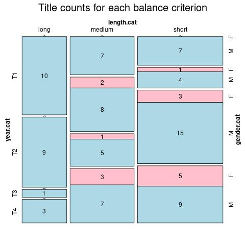

Click on a column heading to sort. Click on a text identifier to read the text (may not work in older browsers).
| Identifier | Encoding | Pages | Words | (Size) | Date (Slot) | Title | Author | Sex | Reprints |
|---|---|---|---|---|---|---|---|---|---|
| HU00642 |
eltec-0 | 1002 | 206761 | (long) | 1845 (T1) | A falu jegyzője | Eötvös, József (1813-1871) | M | high |
| HU00666 |
eltec-0 | 79 | 22682 | (short) | 1857 (T1) | Egy régi udvarház utolsó gazdája | Gyulai, Pál (1826-1909) | M | high |
| HU00688 |
eltec-0 | 147769 | (long) | 1872 (T2) | Az arany ember | Jókai, Mór (1825-1904) | M | high | |
| HU00691 |
eltec-0 | 516 | 125276 | (long) | 1870 (T2) | Fekete gyémántok | Jókai, Mór (1825-1904) | M | high |
| HU00695 |
eltec-0 | 144144 | (long) | 1862 (T2) | A kőszívű ember fiai | Jókai, Mór (1825-1904) | M | high | |
| HU00730 |
eltec-0 | 390 | 88579 | (medium) | 1855 (T1) | Özvegy és leánya | Kemény, Zsigmond (1814-1875) | M | high |
| HU00731 |
eltec-0 | 172 | 22783 | (short) | 1854 (T1) | Szerelem és hiúság | Kemény, Zsigmond (1814-1875) | M | high |
| HU00760 |
eltec-0 | 104 | 27466 | (short) | 1912 (T4) | Francia kastély | Krúdy, Gyula (1878-1933) | M | high |
| HU00786 |
eltec-0 | 427 | 108602 | (long) | 1860 (T2) | Szegény gazdagok | Jókai, Mór (1825-1904) | M | high |
| HU00812 |
eltec-0 | 404 | 13096 | (short) | 1865 (T2) | Mire megvénülünk | Jókai, Mór (1825-1904) | M | high |
| HU00817 |
eltec-0 | 207 | 52853 | (medium) | 1863 (T2) | Felfordult világ | Jókai, Mór (1825-1904) | M | high |
| HU00823 |
eltec-0 | 84 | 19821 | (short) | 1857 (T1) | A varchoniták | Jókai, Mór (1825-1904) | M | high |
| HU00824 |
eltec-0 | 90 | 22092 | (short) | 1857 (T1) | A kalózkirály | Jókai, Mór (1825-1904) | M | high |
| HU00840 |
eltec-0 | 712 | 203997 | (long) | 1860 (T2) | A magyar nemzet története regényes rajzokban | Jókai, Mór (1825-1904) | M | high |
| HU00846 |
eltec-0 | 761 | 226170 | (long) | 1872 (T2) | A jövő század regénye | Jókai, Mór (1825-1904) | M | high |
| HU00910 |
eltec-0 | 450 | 130653 | (long) | 1911 (T4) | A fekete város | Mikszáth, Kálmán (1847-1910) | M | unspecified |
| HU00949 |
eltec-0 | 472 | 133267 | (long) | 1908 (T4) | A Noszty fiú esete Tóth Marival | Mikszáth, Kálmán (1847-1910) | M | high |
| HU00954 |
eltec-0 | 198 | 53010 | (medium) | 1895 (T3) | Szent Péter esernyője | Mikszáth, Kálmán (1847-1910) | M | high |
| HU010019 |
eltec-0 | 82098 | (short) !! | 1853 (T4) | Eszther | Jósika, Miklós (1794-1865) | M | high | |
| HU01009 |
eltec-0 | 84 | 25762 | (short) | 1846 (T1) | A hóhér kötele | Petőfi, Sándor (1823-1849) | M | high |
| HU01115 |
eltec-0 | 491 | 90713 | (medium) | 1858 (T1) | Egy alispán | Vas, Gereben (1823-1868) | M | high |
| HU01116 |
eltec-0 | 479 | 109239 | (long) | 1856 (T1) | Nagy idők, nagy emberek | Vas, Gereben (1823-1868) | M | high |
| HU01117 |
eltec-0 | 390 | 98093 | (medium) | 1857 (T1) | A nemzet napszámosai | Vas, Gereben (1823-1868) | M | high |
| HU01118 |
eltec-0 | 519 | 109443 | (long) | 1855 (T1) | A régi jó idők | Vas, Gereben (1823-1868) | M | high |
| HU01435 |
eltec-0 | 120 | 38505 | (short) | 1911 (T4) | Az Isten háta mögött | Móricz, Zsigmond (1878-1942) | M | high |
| HU01708 |
eltec-0 | 467 | 61288 | (medium) | 1865 (T2) | Garasos arisztokráczia | Vas, Gereben (1823-1868) | M | low |
| HU01768 |
eltec-0 | 171 | 59762 | (medium) | 1862 (T2) | Életunt ember | Vas, Gereben (1823-1868) | M | unspecified |
| HU01924 |
eltec-0 | 483 | 86141 | (medium) | 1866 (T2) | Jurátusélet | Vas, Gereben (1823-1868) | M | low |
| HU02028 |
eltec-0 | 198 | 62913 | (medium) | 1911 (T4) | Színek és évek | Kaffka, Margit (1880-1918) | F | unspecified |
| HU02143 |
eltec-0 | 185 | 70428 | (medium) | 1860 (T2) | A pörös atyafiak | Vas, Gereben (1823-1868) | M | high |
| HU02204 |
eltec-0 | 182 | 32893 | (short) | 1852 (T1) | A kétszarvú ember | Jókai, Mór (1825-1904) | M | high |
| HU03130 |
eltec-0 | 458 | 127812 | (long) | 1842 (T1) | A karthauzi | Eötvös, József (1813-1871) | M | high |
| HU04027 |
eltec-0 | 491 | 52553 | (medium) | 1864 (T2) | Tekintetes urak | Vas, Gereben (1823-1868) | M | low |
| HU04642 |
eltec-0 | 361 | 50401 | (medium) | 1853 (T1) | Ködképek a kedély láthatárán | Kemény, Zsigmond (1814-1875) | M | high |
| HU04774 |
eltec-0 | 766 | 201018 | (long) | 1847 (T1) | Magyarország 1514-ben | Eötvös, József (1813-1871) | M | high |
| HU04828 |
eltec-0 | 177 | 43728 | (short) | 1913 (T4) | A vörös postakocsi | Krúdy, Gyula (1878-1933) | M | high |
| HU05060 |
eltec-0 | 164 | 50810 | (medium) | 1911 (T4) | Sárarany | Móricz, Zsigmond (1878-1942) | M | high |
| HU05510 |
eltec-0 | 877 | 184038 | (long) | 1847 (T1) | Gyulai Pál | Kemény, Zsigmond (1814-1875) | M | high |
| HU05572 |
eltec-0 | 579 | 139820 | (long) | 1854 (T1) | Egy magyar nábob | Jókai, Mór (1825-1904) | M | high |
| HU05573 |
eltec-0 | 763 | 285818 | (long) | 1873 (T2) | És mégis mozog a föld | Jókai, Mór (1825-1904) | M | high |
| HU05620 |
eltec-0 | 448 | 121526 | (long) | 1862 (T2) | Zord idő | Kemény, Zsigmond (1814-1875) | M | high |
| HU05665 |
eltec-0 | 390 | 73354 | (medium) | 1918 (T4) | A vörös Regina | Abonyi, Árpád (1865-1918) | M | low |
| HU05964 |
eltec-0 | 203 | 56778 | (medium) | 1919 (T4) | Piroska | Cholnoky, László (1879-1929) | M | low |
| HU06043 |
eltec-0 | 65 | 22210 | (short) | 1918 (T4) | Árvalányok | Móricz, Zsigmond (1878-1942) | M | unspecified |
| HU06877 |
eltec-0 | 723 | 330685 | (long) | 1887 (T3) | Gróf Benyovszky Móricz életrajza, saját emlékiratai és útleírásai | Jókai, Mór (1825-1904) | M | low |
| HU07264 |
eltec-0 | 239 | 48638 | (short) | 1814 (T4) | A régi ház | Tormay, Cécile (1876-1937) | F | high |
| HU07541 |
eltec-0 | 286 | 67748 | (medium) | 1911 (T4) | Gróf Kaczaifalvi László avagy a természetes ember | Verseghy, Ferenc (1757-1822) | M | low |
| HU07551 |
eltec-0 | 1059 | 199822 | (long) | 1845 (T1) | Magyar titkok | Nagy, Ignác (1810-1854) | M | low |
| HU07552 |
eltec-0 | 763 | 192692 | (long) | 1846 (T1) | Hazai rejtelmek | Kuthy, Lajos (1813–1864) | M | unspecified |
| HU07629 |
eltec-0 | 298 | 52303 | (medium) | 1854 (T1) | Az alföldi vadászok tanyája | Podmaniczky, Frigyes (1824-1907) | M | unspecified |
| HU07693 |
eltec-0 | 386 | 54332 | (medium) | 1861 (T2) | A száműzött leánya | Degré, Alajos (1820-1906) | M | unspecified |
| HU07694 |
eltec-0 | 344 | 47843 | (short) | 1872 (T2) | Anatole | Toldy, István (1844-1879) | M | unspecified |
| HU07703 |
eltec-0 | 294 | 60854 | (medium) | 1860 (T2) | A kis tündér | Vadnai, Károly (1832-1902) | M | unspecified |
| HU07718 |
eltec-0 | 734 | 149978 | (long) | 1875 (T2) | Kálozdy Béla | Beöthy, Zsolt (1848-1922) | M | low |
| HU07751 |
eltec-0 | 201 | 44402 | (short) | 1872 (T2) | Az urak | Tolnai, Lajos (1837-1902) | M | unspecified |
| HU08105 |
eltec-0 | 51 | 28161 | (short) | 1854 (T1) | A szív örvényei | Kemény, Zsigmond (1814-1875) | M | high |
| HU08163 |
eltec-0 | 431 | 52587 | (medium) | 1855 (T1) | Jávor orvos és szolgája, Bakator Ambrus | Fáy, András (1786-1864) | M | low |
| HU08358 |
eltec-0 | 548 | 151256 | (long) | 1920 (T4) | Édes anyaföldem! | Benedek, Elek (1813-1893) | M | unspecified |
| HU08835 |
eltec-0 | 205 | 27785 | (short) | 1912 (T4) | Az elvált asszony | Szomaházy, István (1864-1927) | M | unspecified |
| HU10176 |
eltec-0 | 166 | 27311 | (short) | 1897 (T3) | Polgárháború ; Egy falusi Hamlet | Rákosi, Viktor (1860-1923) | M | high |
| HU10230 |
eltec-0 | 1013 | 238192 | (long) | 1861 (T1) | II. Rákóczi Ferencz | Jósika, Miklós (1794-1865) | M | high |
| HU10855 |
eltec-0 | 184 | 76348 | (medium) | 1854 (T1) | A szegedi boszorkányok | Jósika, Miklós (1794-1865) | M | unspecified |
| HU11047 |
eltec-0 | 123 | 24280 | (short) | 1894 (T3) | A világjáró angol | Gárdonyi, Géza (1863-1922) | M | unspecified |
| HU11795 |
eltec-0 | 202 | 41719 | (short) | 1912 (T4) | Rontó Pál viselt dolgai vizen és szárazon | Ágai, Adolf (1836-1916) | M | low |
| HU12296 |
eltec-0 | 322 | 48005 | (short) | 1896 (T3) | Anarkalli | Donászy, Ferenc (1858-1923) | M | low |
| HU12551 |
eltec-0 | 319 | 50042 | (medium) | 1896 (T3) | Katalin | Benedek, Elek (1813-1893) | M | unspecified |
| HU12692 |
eltec-0 | 224 | 33013 | (short) | 1900 (T4) | Páratlan szerdák | Szomaházy, István (1864-1927) | M | unspecified |
| HU13316 |
eltec-0 | 328 | 52170 | (medium) | 1911 (T4) | A Kont-eset | Szemere, György (1863-1930) | M | low |
| HU13387 |
eltec-0 | 689 | 138886 | (medium) !! | 1901 (T4) | Egri csillagok | Gárdonyi, Géza (1863-1922) | M | high |
| HU13418 |
eltec-0 | 157 | 28848 | (short) | 1898 (T3) | A negyvenéves férfiú | Tábori, Róbert (1855-1906) | M | low |
| HU13462 |
eltec-0 | 175 | 36087 | (short) | 1897 (T3) | Két világ közt | Kövér, Ilma (1862-1928) | F | low |
| HU13726 |
eltec-0 | 160 | 31146 | (short) | 1892 (T3) | A vér | Beniczkyné, Bajza Lenke (1839-1905) | F | unspecified |
| HU13887 |
eltec-0 | 180 | 33323 | (short) | 1898 (T3) | A tisztesség nevében | Kóbor, Tamás (1867-1942) | M | unspecified |
| HU14199 |
eltec-0 | 168 | 28237 | (short) | 1888 (T3) | Faust orvos | Bródy, Sándor (1863-1924) | M | unspecified |
| HU14213 |
eltec-0 | 359 | 56949 | (medium) | 1890 (T3) | A hegység tündére | Beniczkyné, Bajza Lenke (1839-1905) | F | unspecified |
| HU14261 |
eltec-0 | 141 | 23916 | (short) | 1895 (T3) | Lavina | Pekár, Gyula (1867-1937) | M | low |
| HU14501 |
eltec-0 | 152 | 25906 | (short) | 1897 (T3) | A grófné ura | Tolnai, Lajos (1837-1902) | M | low |
| HU14537 |
eltec-0 | 168 | 31198 | (short) | 1897 (T3) | Szeptember | Ambrus, Zoltán (1861-1932) | M | low |
| HU14548 |
eltec-0 | 298 | 58746 | (medium) | 1881 (T3) | Régi és uj nemesek | Ábrányi, Kornél (1822-1903) | M | unspecified |
| HU14564 |
eltec-0 | 157 | 27035 | (short) | 1897 (T3) | Kisvárosiak | Herman, Ottóné (1856-1916) | F | low |
| HU14769 |
eltec-0 | 339 | 61512 | (medium) | 1878 (T2) | Itt és a jövő életben | Beniczkyné, Bajza Lenke (1839-1905) | F | unspecified |
| HU16046 |
eltec-0 | 153 | 29696 | (short) | 1895 (T3) | Mindhiába | Vértesi, Arnold (1836-1911) | M | low |
| HU16059 |
eltec-0 | 154 | 28554 | (short) | 1895 (T3) | Mézes hetek | Vértesi, Arnold (1836-1911) | M | low |
| HU16123 |
eltec-0 | 445 | 94912 | (medium) | 1896 (T3) | Az utolsó | Malonyay, Dezső (1866-1916) | M | low |
| HU16127 |
eltec-0 | 158 | 27221 | (short) | 1896 (T3) | Salve Regina | Palotás, Fausztin (1855-1922) | M | low |
| HU16153 |
eltec-0 | 169 | 30344 | (short) | 1897 (T3) | Jön a hajnal | Abonyi, Árpád (1865-1918) | M | low |
| HU16275 |
eltec-0 | 222 | 54264 | (medium) | 1918 (T4) | Napraforgó | Krúdy, Gyula (1878-1933) | M | unspecified |
| HU16343 |
eltec-0 | 168 | 29597 | (short) | 1878 (T2) | Az elzárt gyámleány | Degré, Alajos (1820-1906) | M | unspecified |
| HU16492 |
eltec-0 | 362 | 66827 | (medium) | 1895 (T3) | A második férj | Abonyi, Árpád (1865-1918) | M | low |
| HU16700 |
eltec-0 | 151 | 34406 | (short) | 1908 (T4) | Uzoni Margit | Benedek, Elek (1813-1893) | M | unspecified |
| HU16824 |
eltec-0 | 262 | 47729 | (short) | 1908 (T4) | A nagy véletlen | Ritoók, Emma (1868-1945) | F | low |
| HU17606 |
eltec-0 | 301 | 57333 | (medium) | 1919 (T4) | Tabu | Teleki, Sándorné (1864-1937) | F | low |
| HU17618 |
eltec-0 | 152 | 21125 | (short) | 1906 (T4) | Enyém? | Teleki, Sándorné (1864-1937) | F | unspecified |
| HU17873 |
eltec-0 | 220 | 28349 | (short) | 1864 (T2) | Az élet esélyei | Jósika, Júlia (1813-1893) | F | low |
| HU17884 |
eltec-0 | 154 | 29648 | (short) | 1905 (T4) | Egyenes úton - egyedül | Ritoók, Emma (1868-1945) | F | low |
| HU17999 |
eltec-0 | 261 | 60532 | (medium) | 1863 (T2) | Szeretet könyve | Kánya, Emília (1830-1905) | F | low |
| HU18047 |
eltec-0 | 318 | 26119 | (short) | 1894 (T3) | A Kráó | Jókai, Mór (1825-1904) | M | high |
| HU18535 |
eltec-0 | 255 | 45870 | (short) | [1882] (T3) | Köd | Gozsdu, Elek (1849-1919) | M | unspecified |
| HU18579 |
eltec-0 | 189 | 33097 | (short) | 1915 (T4) | Ez az! | Teleki, Sándorné (1864-1937) | F | low |
| HUN19090 |
eltec-0 | 77578 | (medium) | 1909 (T4) | Végzetes tévedés | Beniczkyné Bajza, Lenke (1839-1905) | F | unspecified |